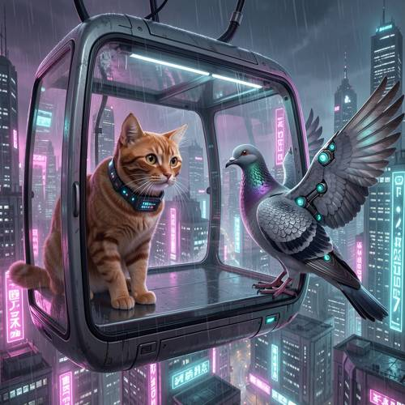

Entity Layout — In Cyberpunk style, an orange cat wearing a translation collar was on
In Cyberpunk style, an orange cat wearing a translation collar was on the left side of the transparent suspension cabin, looking curiously at a dove with metal feathers on the right side of the cabin.


Judge — Direct
- PASSEntity Layout - Two-Dimensional Space — An orange cat is positioned on the left side of the interior of a transparent cabin, while a dove is on the right side of the interior of the cabin.
- PASSStyle — The image displays a cyberpunk style, featuring a futuristic cityscape with tall buildings, abundant glowing neon signs in pink and blue hues, and a high-tech suspended cabin.
- PASSRelationship - Inclusion — The orange cat and the dove are both located inside a transparent, spherical suspension cabin.
- FAILCompound - Feature Matching — The image features an orange cat wearing a purple collar with a small, glowing device on it. There is also a dove, but while it wears a metallic harness over its wings and body, its feathers are not made of metal.
Judge — Continuum
- PASSEntity Layout - Two-Dimensional Space — The image shows an orange cat on the left side of the frame, inside a cabin. To the right of the cat, a dove is positioned on the right side of the cabin's platform.
- PASSStyle — The image exhibits a clear cyberpunk style, featuring a futuristic city with tall buildings, glowing pink and blue neon signs, a suspended vehicle, and a dark, rainy atmosphere.
- PASSRelationship - Inclusion — The image depicts a transparent suspension cabin. The cat is inside the cabin, and the dove is perched on the edge of the cabin's floor platform.
- PASSCompound - Feature Matching — The orange cat is shown wearing a black, futuristic-looking collar with glowing lights and a small display, which matches the description of a translation collar. The dove's wings are augmented with metallic parts and glowing circular lights, consistent with the description of having metal feathers.
What the agent did
Thinking
We need generate image. User describes scene. Need use flux2-klein fixed. Need fill visual details implied, no nonvisual. Need likely transparent suspension cabin perhaps cable car/gondola? Cyberpunk city background. Orange cat on left side inside transparent suspended cabin, wearing translation collar, looking curiously at dove with metal feathers on right. Need maybe no text. Generate.
Step 1 — `generate_image`
{
"prompt": "Cyberpunk concept-art scene inside a fully transparent suspended cabin high above a neon-drenched megacity at night. On the left side of the glass cabin, an orange cat wearing a sleek electronic translation collar with small glowing indicators sits alert and leans forward, eyes wide with curiosity as it looks toward the right. On the right side of the cabin, a dove with intricately segmented metallic feathers and subtle cyan-lit mechanical wing joints faces the cat. Clear left-to-right composition with both animals visible, reflections and transparent cabin structure, rain-slick city towers, magenta and cyan neon light, cinematic depth, highly detailed fur and feather mechanics, moody atmospheric haze, no text.",
"model": "flux2-klein"
}Result img_0
Thinking
Need inspect. The image looks good. Cat left, collar, dove right metal feathers, cabin transparent suspension, cyberpunk. Need perhaps issue: dove appears partially outside cabin? It is perched on right side of cabin, wings extend outside but maybe cabin is open? User says inside? "on right side of cabin" likely. Transparent suspension cabin. There is random text but prompt no text; background signs okay maybe prompt said no text but signs have glyphs. Need if asks rendered text? no. Good enough. Need mark best as soon as willing. Call mark_best. Then final maybe state done.
Step 2 — `mark_best`
{
"image": "img_0",
"reason": "The composition clearly shows the orange cat with a glowing translation collar on the left of a transparent suspended cabin, curiously facing the metal-feathered dove on the right, within a cohesive neon cyberpunk city scene."
}Model
Generated and marked the image as best: **img_0**.